三问直接答复
作为外企应该怎么建立微信支付的商户账号，需要准备哪些资料，大概要多久时间审核
| 公司 | 依据 |
|---|---|
| 启迈检测（东莞）有限公司 | 天眼查 2350647307。法人 Pierre Nicolas Disser。曾用名启迈瀚莎检测服务（东莞）有限公司，2025 年 6 月起用现名，对公户名必须是现名。 |
| 另外两家 | 爱企查 23394249591525、天眼查 2324323301。这两个页面本次没有打开。按你的确认，法人同样是 PND，各用自己的营业执照和对公户。 |
准备资料
| 资料 | 要求 |
|---|---|
| 超级管理员微信 | 超管定为经办人。扫码创建申请单的微信号就是这个经办人，负责签约、收开户通知、操作资金。不用法人的微信。 |
| 营业执照 | 5MB 内彩色照片、扫描件，或加盖公章的复印件。主体类型选企业。 |
| 法定代表人证件 | 支持大陆身份证、护照、港澳台通行证、外国人居留证、港澳台居住证。护照不需要反面。外籍法人姓名中英文不一致时，把执照姓名和护照名都写上，并附翻译件或盖章说明函，转人工审核。 |
| 经办人材料 | 三家都要。经办人证件，以及业务办理授权函。 |
| 最终受益人 | 法人不是唯一受益人时，最多填 4 人。证件类型同样支持护照。 |
| 经营信息 | 商户简称、真实客服电话、行业，以及已认证的小程序 AppID。 |
| 结算账户 | 企业只能填对公账户，户名必须与当前执照名称一致，收人民币。不能用私人卡，也不能用境外账户。 |
审核多久
- 账户验证通过后，资料审核 1–3 个工作日。
- 超管刷脸后，签约审核再 1–2 个工作日。
- 签约刷脸由经办人做，经办人就是超级管理员。三家都要交经办人证件和业务办理授权函。法人没有微信，账户验证用该公司对公账户向财付通汇入指定金额，法人不用出面。护照英文名和执照中文名不一致，或东莞对公户还是曾用名，会再拉长。
作为外企应该怎么在微信小程序做系统连接关联微信支付？是否可以关联支付宝支付
系统连接
- 小程序用企业主体注册，完成微信认证和小程序备案，拿到 AppID。未认证不能使用微信支付。
- 商户号签约后，超管在「产品中心 → APPID 授权管理」或「账户中心 → 经营场景管理」填写 AppID。主体一致的，小程序管理员在公众平台确认，7 天内不确认就作废。主体不一致要签《微信支付联合营运承诺函》，审核大约 1–2 个工作日。
- 后台用小程序下单接口拿到
prepay_id，前端用wx.requestPayment拉起收银台。下单 AppID、调起 AppID 和付款用户必须一致。
一个小程序可以绑多个商户号。三家公司就是三个商户号绑同一个小程序。每笔付款只进一个商户号。
支付宝放在网站收银台，是什么意思
网站收银台就是公司网站上的付款页，用手机或电脑的浏览器打开，不在微信小程序里面。客户在那一页选择支付宝，浏览器再打开支付宝自己的付款页。钱进支付宝商户号，不进微信商户号。
微信小程序里只能拉起微信支付。把支付宝网页嵌进小程序（web-view）也不行，官方写明这里不能跑 H5 支付。从微信里跳出去再打开支付宝，也不能当成这个小程序的收款方式。
客户要付支付宝，只有两条路：
- 留在网站付款页。小程序里可以写一句「支付宝请到网站支付」，真正扣款发生在浏览器。网站上如果已经接了支付宝，就继续用那一页，不必为了小程序再开一套。
- 另做一个支付宝小程序。那是支付宝 App 里的另一个程序，要单独的支付宝商户号，和这三家微信商户号不是同一套账户。
同一张发票不要两个渠道各付一次。微信付过的，网站付款页要显示已付。
开户和接入时容易踩的坑
三家法人都是 Pierre Nicolas Disser，超级管理员是经办人。刷脸由经办人做。账户验证用对公户汇款，不靠法人微信。每笔钱必须进开票那家公司。
- 1 三家各开一个商户号，一笔款不能进两家 小程序可以绑三个商户号，每张发票只进开票公司自己的商户号。绑错公司，钱就进错账户。同一个法人不代表可以共用一个商户号。
- 2 超管是经办人，法人不用刷脸 三家都由经办人扫码建单、刷脸签约，并提交经办人证件和业务办理授权函。法人没有微信，账户验证用对公账户向财付通汇入指定金额。执照中文名和护照英文名对不上，要附翻译件或盖章说明，转人工。
- 3 对公户名必须是当前执照全称 东莞 2025 年 6 月从「启迈瀚莎检测服务（东莞）有限公司」改为「启迈检测（东莞）有限公司」。银行户名还是曾用名，开户过不了。企业不能用私人卡，也不能用境外账户。
- 4 小程序主体和商户号不是同一家时，要另签承诺函 主体一致，小程序管理员 7 天内确认即可。主体不一致要签《微信支付联合营运承诺函》，审核大约 1–2 个工作日。绑定后不能解绑。费率不一致会直接拦在线绑定。
- 5 这个微信小程序里调不起支付宝 web-view 里也不能跑 H5 支付。支付宝留在浏览器里的网站付款页，或另做支付宝小程序。扣款不在这个微信小程序里发生。
- 6 未认证、未备案、未发布，都收不了款 未认证不能使用微信支付。未发布的小程序每月测试额度 1 万元，满 3 个月不能收款。备案平台审 1–2 个工作日，省管局大约 1–20 个工作日，和开户是两条线。
- 7 前端支付成功不能当入账 以商户后台的支付结果通知为准。实验室发票不要按实物电商类目申报，那条线会要求做订单发货管理。
- 8 T+1 是先到微信基本账户，0.6% 只是示例 当天不一定到银行。手续费按笔扣除、四舍五入到分。行业费率表不是合同，以商户平台核定的费率为准。
微信支付商户平台首页
三家公司开境内商户号的入口。申请从这里提交，签约后在商户平台登录操作。
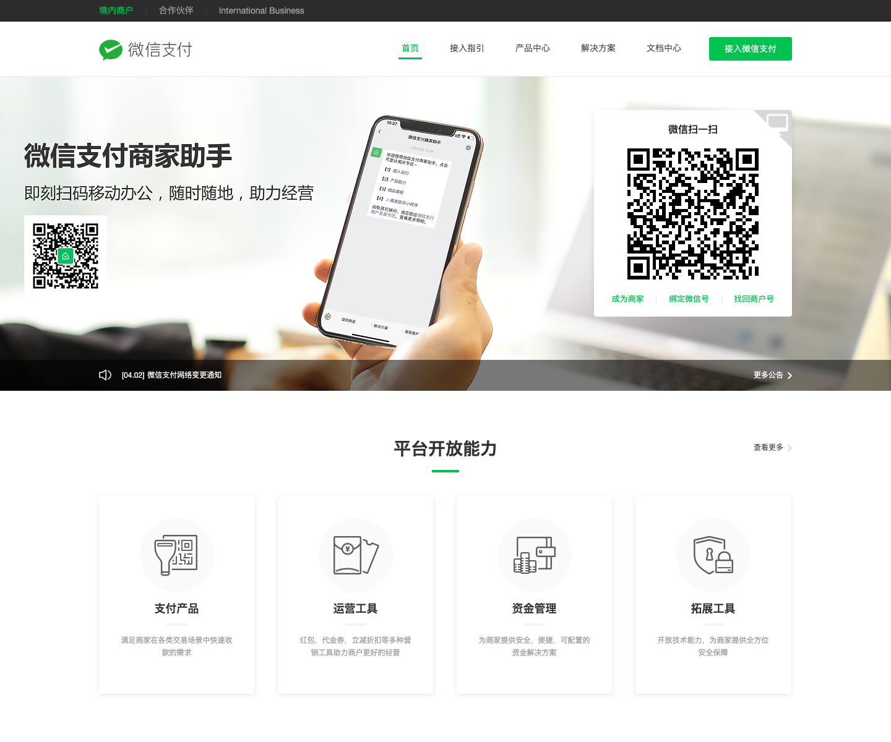
小程序支付开发指引
小程序接入微信支付的官方开发文档。页面包含开发前准备（设置安全联系人、API 密钥、平台证书）、业务开发流程概览图，以及用户/服务商/微信支付系统/后台四方泳道时序图——技术对接时直接照着改参数即可。注意底部提醒：交易类小程序需满足公众平台《交易类小程序运营规范》才能在正式环境调起支付。
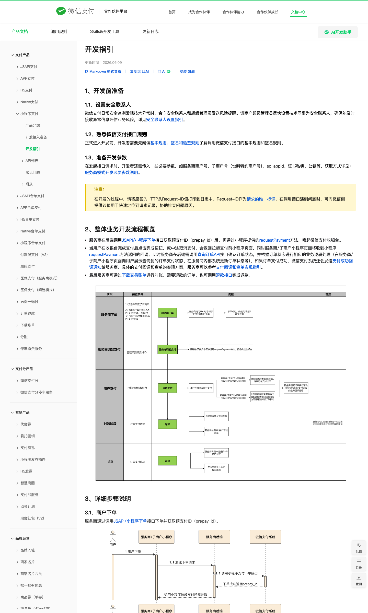
经营场景管理 · AppID 绑定
小程序 AppID 绑定商户号的流程。主体一致，小程序管理员确认即可。三家里和小程序注册公司不是同一家的，要签《微信支付联合营运承诺函》。未发布的小程序每月测试额度 1 万元，满 3 个月不能收款。实物电商类目还有额外限制，实验室发票不要报成这一类。
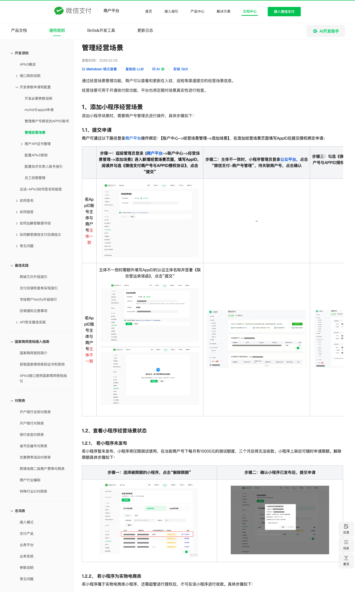
资料审核 1–3 个工作日
账户验证通过后，微信支付在 1–3 个工作日内完成资料审核，并用公众号、短信、邮件通知超级管理员。帮助页里的示例单同时写着结算周期 T+1、结算费率 0.6%。签约刷脸之后还有一轮签约审核。
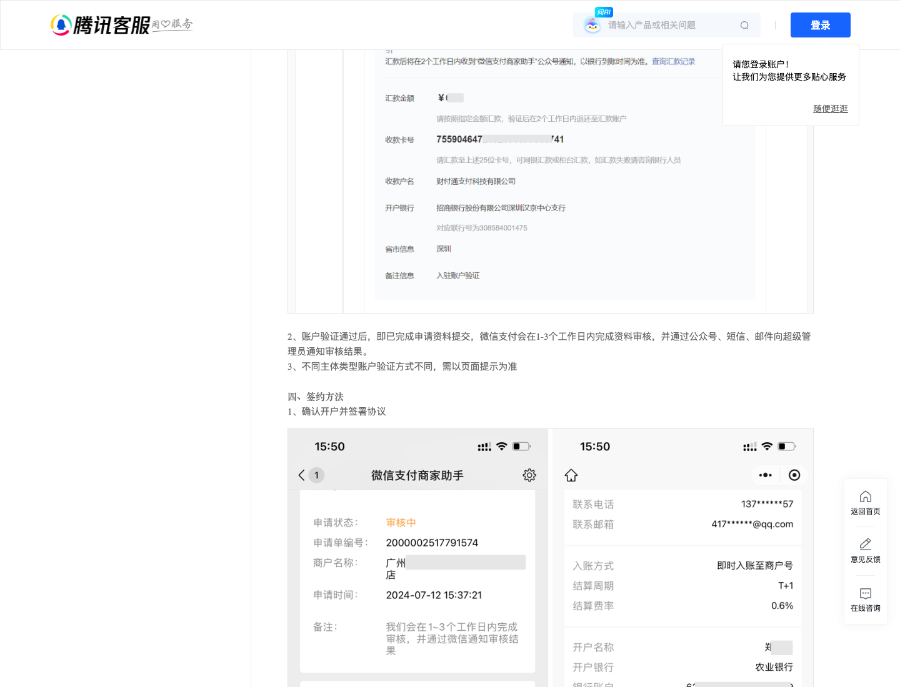
手续费与结算周期
T+1 是当天结算到商户平台基本账户，不是当天到银行。手续费按单笔四舍五入到分后扣除。示例费率是 0.6%。具体行业费率以商户平台核准记录为准，成本中心怎么记账要财务定，官方页面不规定。
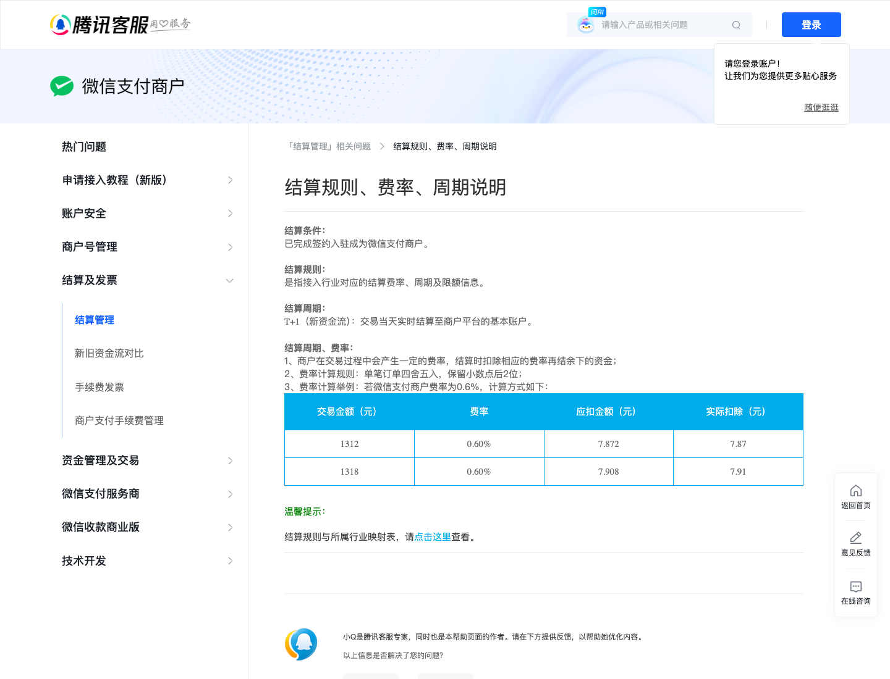
异主体绑定小程序
商户号主体和小程序主体不一致时，要签《微信支付联合运营承诺函》，平台审核一般 1–2 个工作日，再由小程序管理员确认。三家是不同公司，只有和小程序注册公司不一致的那几家走这条。
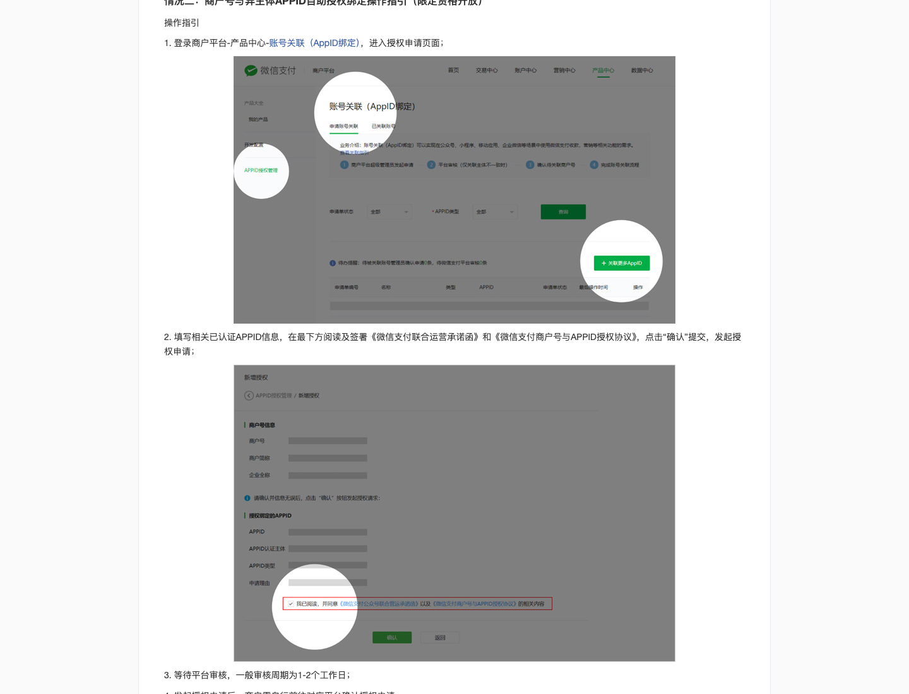
先微信认证，才能用微信支付
企业小程序可以先注册。官方写明：已认证账号可使用微信支付权限。个人主体不能做微信认证。入口是小程序后台「设置 → 基本设置 → 微信认证」。
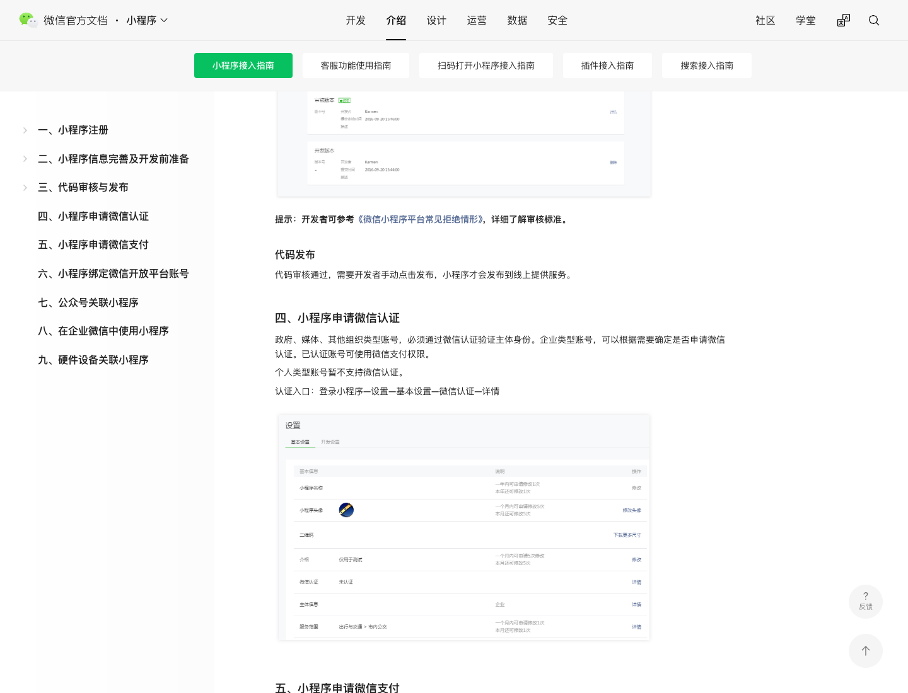
小程序备案，管局 1–20 个工作日
上架前要备案。平台初审 1–2 个工作日，工信部短信核验要在 24 小时内完成，省通信管理局再审 1–20 个工作日。这是备案，不是增值电信业务经营许可证。经营性许可证要不要办，这页没有结论，仍由法务看 Q5。
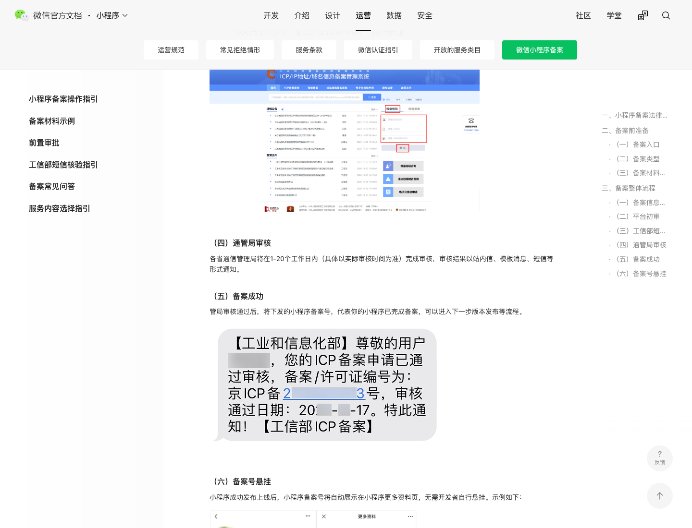
个人付款限额：没有一个统一上限
零钱按账户类别有年度额度：I 类 1000 元终身，II 类 10 万元/年，III 类 20 万元/年。超过后可以用银行卡付。协议写明交易限额由监管、场景、风控和银行共同决定，以收银台当时的提示为准。下面第二张表是转账、红包、面对面，不是实验室发票的单笔上限。
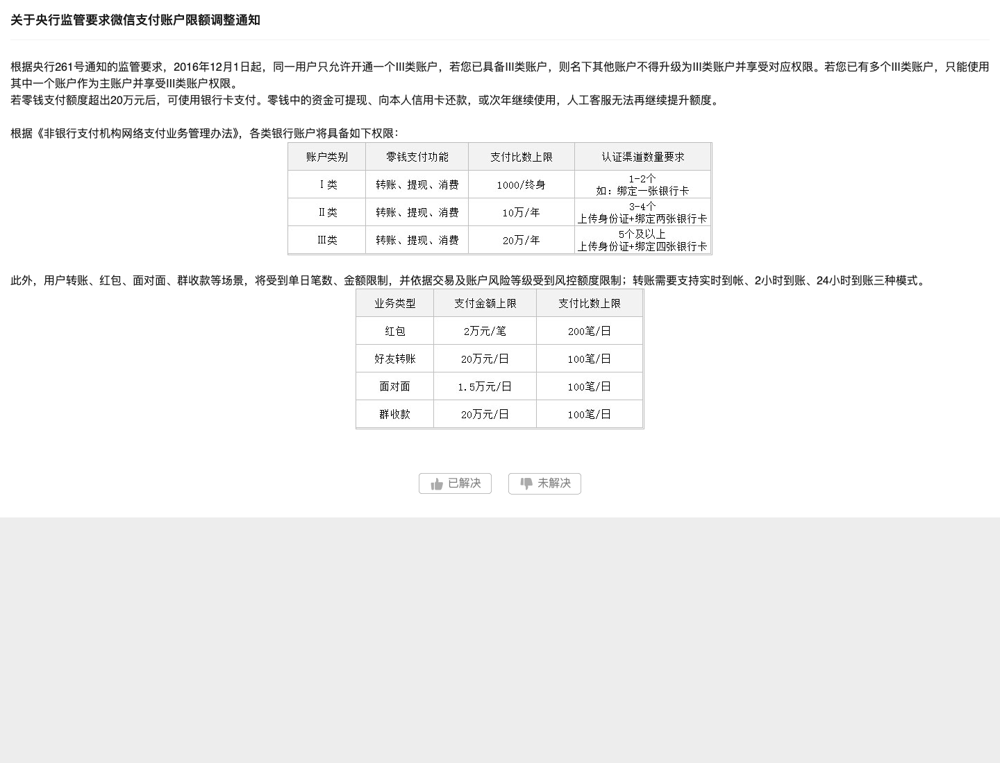
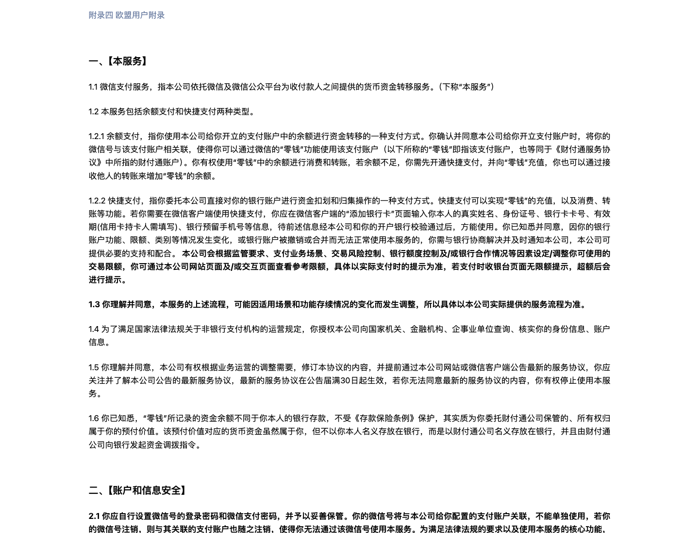
企业只能填对公账户，户名与执照一致
三家都是企业，只看第 ② 条：只能选对公账户，户名必须和当前申请单主体一致。第 ① 条、第 ③ 条是个体工商户和个人储蓄卡，用不上。
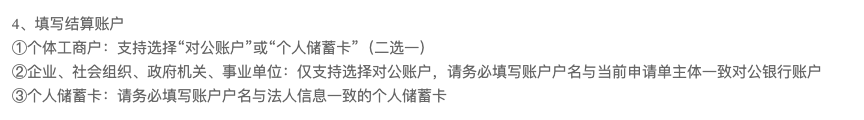
账户验证：法人微信扫码，或对公户汇一笔
超级管理员是经办人，签约刷脸由经办人做。账户验证不用法人微信：用该公司对公账户向财付通汇入页面上的指定金额。图里的申请单和二维码是帮助页示例，其中扫码是另一条路，这三家不走。
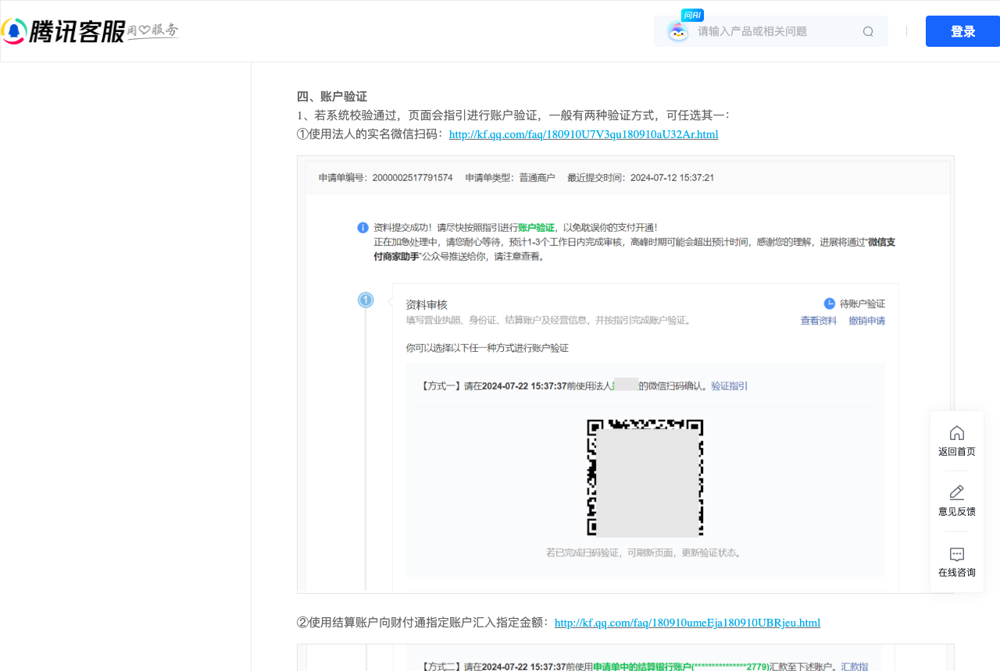
外籍法人：执照中文名和护照英文名
执照上的法人姓名和护照姓名不一致时，两处都写成「中文（英文）」，护照翻译件或盖鲜章的证明函和护照拼在证件正面，转人工审核。PND 三家申请都要按这个准备。
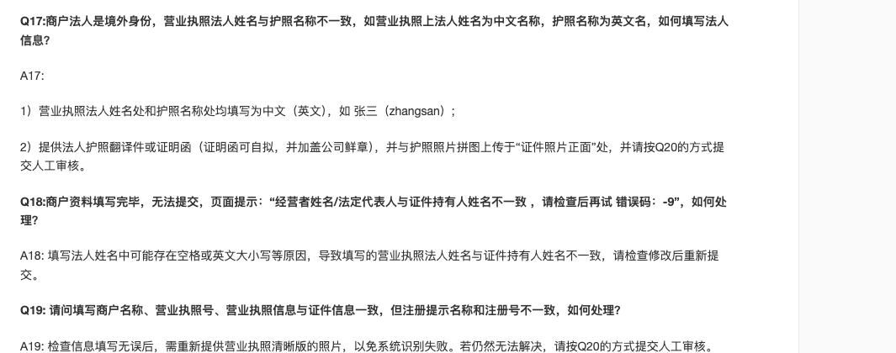
小程序里不能跑 H5 支付
官方写明：小程序 web-view 内不支持 H5 支付，H5 支付只能在外部浏览器里用。所以这个小程序里做不了支付宝收银台。
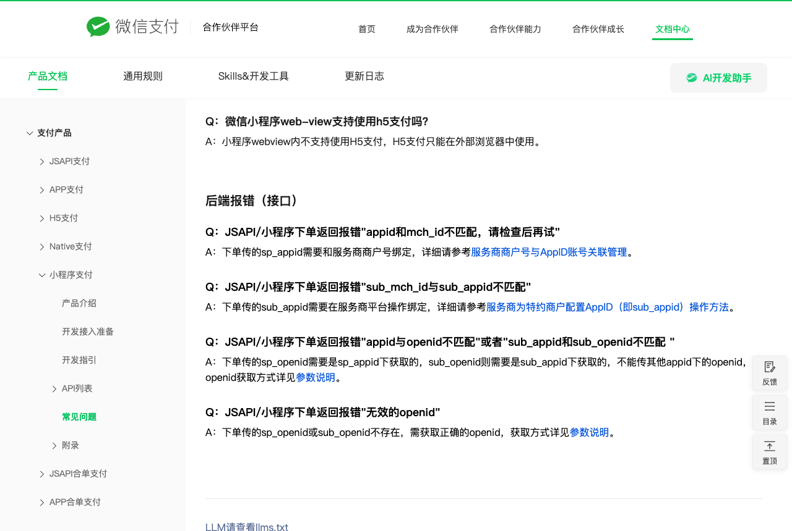
一个商户号最多绑 50 个 AppID，绑了不能解
一个商户号最多关联 50 个 AppID。主体不一致要补 AppID 主体信息。小程序上已有商户号时，新商户号费率必须一致，否则不能在线绑定。绑定后暂不支持解绑。三家要各自建一条绑定。
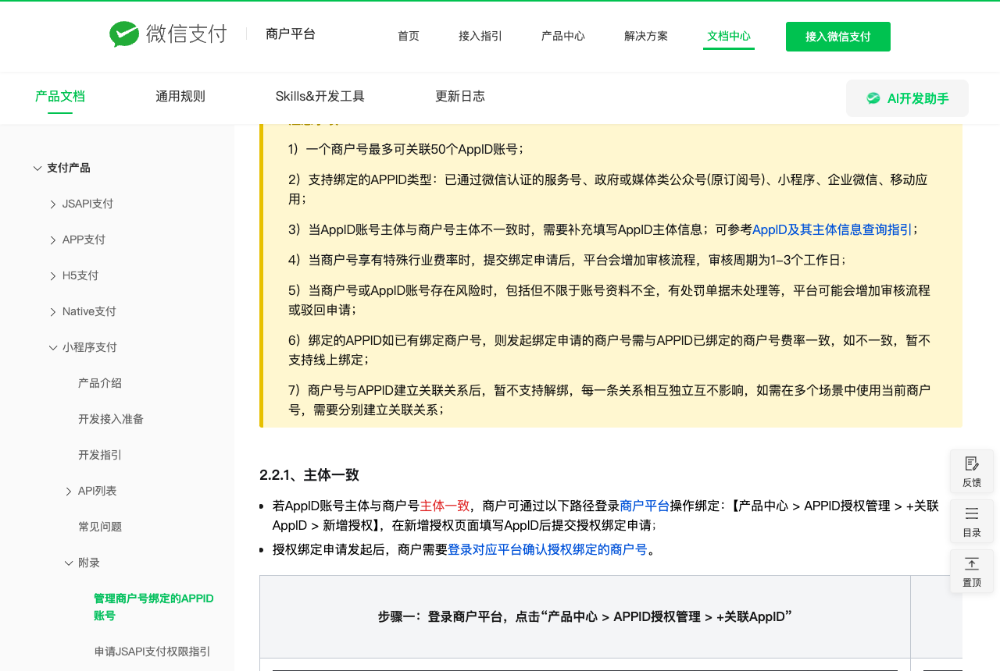
三家开户到收款
每家公司走一遍。超级管理员是经办人。法人不扫微信，账户验证用对公户汇款。东莞对公户名用「启迈检测（东莞）有限公司」。
- 1 备齐材料 当前营业执照、同名人民币对公户、PND 护照和中英文对照说明、经办人证件、业务办理授权函、经办人实名微信。
- 2 经办人扫码建单 在 pay.weixin.qq.com 点接入微信支付。扫码的微信号就是超级管理员，负责签约、收通知、操作资金。
- 3 填写企业和结算户 主体选企业。上传执照、法人护照、经营信息和小程序 AppID。结算户只填该公司对公账户，户名与当前执照全称一致。
- 4 对公户汇给财付通 账户验证不走法人扫码。用这家公司的对公账户，向财付通汇入页面上的指定金额。
- 5 资料审核 1–3 个工作日 审核结果发到经办人的微信、短信和邮件。姓名对不上或户名是曾用名，会转人工。
- 6 经办人刷脸 签约前的身份核验由超级管理员刷脸。法人不用刷。
- 7 签约审核 1–2 个工作日 通过后商户号开通，钱结算进这家公司自己的人民币对公户。
- 8 小程序先认证、再备案 未认证不能使用微信支付。未备案不能上架。这两件事和开户同时排。
-
和小程序是同一家 超管发起绑定。小程序管理员 7 天内确认，过期作废。另外两家 签《微信支付联合营运承诺函》，审核大约 1–2 个工作日。绑定后不能解绑。
- 9 三个商户号绑同一个小程序 客户付哪家的发票，就进哪家的商户号。一笔款不能拆给两家。
- 10 支付宝留在网站 这个微信小程序里只拉起微信支付。支付宝在浏览器里的网站付款页完成，不进小程序。